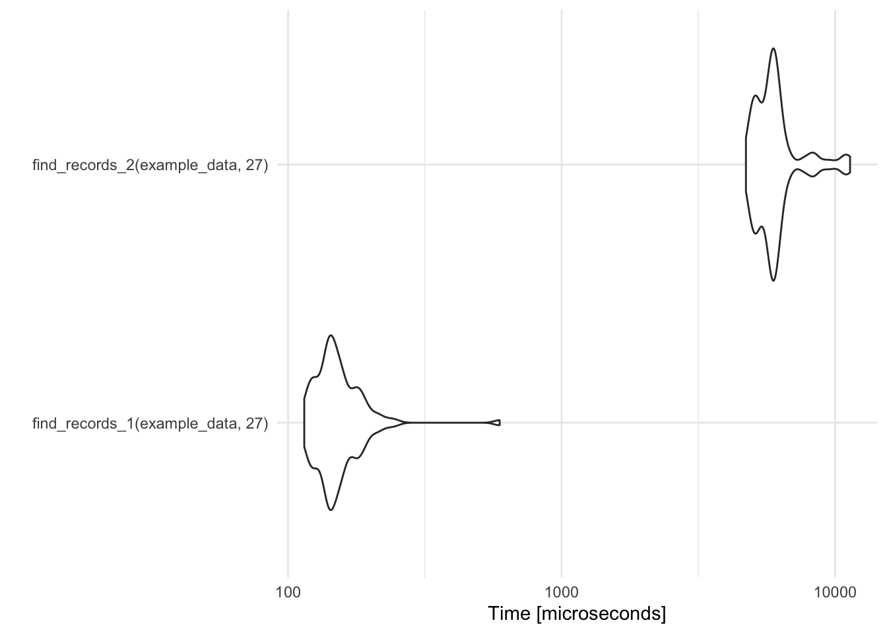
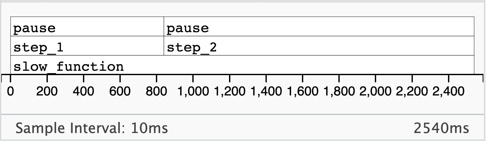

Optimization
Misc
- A while loop is faster than a recursive function
- ungroup before performing calculations in mutate or summarize when that calculation doesn’t need to be performed within-group (i.e. per factor level)
- String functions
- “fixed” searches,
fixed = TRUEare fastest overall- Searches involving fixed strings (e.g. “banana”) that don’t require regular expressions
- PCRE2,
perl = TRUE, is fastest for regular expressions
- “fixed” searches,
- Adding Rows to a Matrix (link, link)
rbindis very slow andcbind+t()isn’t much betterfrbind <- function(n) { res <- vector() for (i in 1:n) { res <- rbind(res, runif(n)) } res } fcbind <- function(n) { res <- vector() for (i in 1:n) { res <- cbind(res, runif(n)) } t(res) }Add rows to a list then combine into a matrix
# grow list which is converted to a matrix at the end. flist <- function(n) { res <- list() for (i in 1:n) { res[[length(res) + 1]] <- runif(n) } do.call(rbind, res) } flist2 <- function(n) { res <- list() for (i in 1:n) { res[[length(res) + 1]] <- runif(n) } len <- length(res) res <- res |> purrr::list_c() dim(res) <- c(len, len) res }list_cuses C under the hood and might be faster on larger matrices.
Benchmarking
- Misc
- Mastering Software Development in R, Ch. 2.71
- {bench}
Misc
- Automatically checks that each approach gives the same output, so that you don’t mistakenly compare apples and oranges
bench::markcreates a very large output object. The one in Vectorization Workflows >> Example 1 was 400MB. RStudioViewlocked up when I tried to look at it. There are large dataframes nested within the memory and result columns. Setting the option memory = FALSE only decreases the size of the object very little. Compilation of this object will take a minute or two after the benchmark has technically finished.
Example: Basic
res <- bench::mark( approach_1 = Reduce(sum, numbers), approach_2 = sum(unlist(numbers)) ) res %>% select(expression, median) #> # A tibble: 2 × 2 #> expression median #> <bch:expr> <bch:tm> #> 1 approach_1 2.25µs #> 2 approach_2 491.97ns
- {microbenchmark}
Example: Basic
record_temp_perf <- microbenchmark(find_records_1(example_data, 27), find_records_2(example_data, 27)) record_temp_perf ## Unit: microseconds ## expr min lq mean median uq ## find_records_1(example_data, 27) 114.574 136.680 156.1812 146.132 163.676 ## find_records_2(example_data, 27) 4717.407 5271.877 6113.5087 5867.701 6167.709 ## max neval ## 593.461 100 ## 11334.064 100 library(ggplot2) autoplot(record_temp_perf)- Default: 100 iterations
- Times are given in a reasonable unit, based on the observed profiling times (units are given in microseconds in this case).
- Output
- min - min time
- lq - lower quartile
- mean, median
- uq - upper quartile
- max - max time
{kind=link}
Profiling
- Misc
- {profvis}
Example: Basic
step_1 <- function() { pause(1) } step_2 <- function() { pause(2) } slow_function <- function() { step_1() step_2() TRUE } result <- profvis(slow_function()) result- Bottom Row: outermost function
- 2nd Row from the bottom are the functions in the next enviromental layer (e.g. “step_1” and “step_2”)
- “step_2” takes about 2/3 of the total function execution time or twice the execution time of “step_1”
- 3rd Row from the bottom (top row) are the functions in each of those other functions
- “pause” in “step_2” takes about 2/3 of the total function execution time or twice the execution time of “pause” in “step_1”
{kind=link}
Python
Benchmarking
{{time}}(built-in module)
import time start = time.perf_counter() time.sleep(1) # do work elapsed = time.perf_counter() - start print(f'Time {elapsed:0.4}') #> Time 1.001
Memory Usage
- {{memory-profiler}}
Basic usage for a function
from memory_profiler import memory_usage mem, retval = memory_usage((fn, args, kwargs), retval=True, interval=1e-7)interval: For very quick operations the function
fnmight be executed more than once. By settingintervalto a value lower than 1e-6, we force it to execute only once.retval: Tells the function to return the result of fn.
Non-interactive usage
$ python -m memory_profiler example.py #> Line # Mem usage Increment Line Contents #> ============================================== #> 3 @profile #> 4 5.97 MB 0.00 MB def my_func(): #> 5 13.61 MB 7.64 MB a = [1] * (10 ** 6) #> 6 166.20 MB 152.59 MB b = [2] * (2 * 10 ** 7) #> 7 13.61 MB -152.59 MB del b #> 8 13.61 MB 0.00 MB return a
- {{memory-profiler}}
Profile decorator
import time from functools import wraps from memory_profiler import memory_usage def profile(fn): @wraps(fn) def inner(*args, **kwargs): fn_kwargs_str = ', '.join(f'{k}={v}' for k, v in kwargs.items()) print(f'\n{fn.__name__}({fn_kwargs_str})') # Measure time t = time.perf_counter() retval = fn(*args, **kwargs) elapsed = time.perf_counter() - t print(f'Time {elapsed:0.4}') # Measure memory mem, retval = memory_usage((fn, args, kwargs), retval=True, timeout=200, interval=1e-7) # Get Peak Memory Usage print(f'Memory {max(mem) - min(mem)}') return retval return inner @profile def work(n): for i in range(n): 2 ** n work(10) #> work() #> Time 0.06269 #> Memory 0.0 work(n=10000) #> work(n=10000) #> Time 0.3865 #> Memory 0.0234375
Replacements for Tidyverse Functions
Misc
- Notes from: Writing performant code with tidy tools
- Also provides links to more {vctrs} recipes from their tidymodels github pull requests
- For code that relies on
group_by()and sees heavy traffic, seevctrs::list_unchop(),vctrs::vec_chop(), andvctrs::vec_rep_each().
- Notes from: Writing performant code with tidy tools
select
bench::mark( dplyr = select(mtcars_tbl, hp), `[.tbl_df` = mtcars_tbl["hp"] ) %>% select(expression, median) #> # A tibble: 2 × 2 #> expression median #> <bch:expr> <bch:tm> #> 1 dplyr 527.01µs #> 2 [.tbl_df 8.08µs- Winner: base R subsetting
filter
Wres <- bench::mark( dplyr = filter(mtcars_tbl, hp > 100), vctrs = vec_slice(mtcars_tbl, mtcars_tbl$hp > 100), `[.tbl_df` = mtcars_tbl[mtcars_tbl$hp > 100, ] ) %>% select(expression, median) res #> # A tibble: 3 × 2 #> expression median #> <bch:expr> <bch:tm> #> 1 dplyr 289.93µs #> 2 vctrs 4.63µs #> 3 [.tbl_df 23.74µs- Winner:
vctrs::vec_slice
- Winner:
mutate
bench::mark( dplyr = mutate(mtcars_tbl, year = 1974L), `$<-.tbl_df` = {mtcars_tbl$year <- 1974L; mtcars_tbl} ) %>% select(expression, median) #> # A tibble: 2 × 2 #> expression median #> <bch:expr> <bch:tm> #> 1 dplyr 302.5µs #> 2 $<-.tbl_df 12.8µs- Winner: base R assignment
mutate and relocate
bench::mark( mutate = mutate(mtcars_tbl, year = 1974L, .after = make_model), relocate = relocate(mtcars_tbl, year, .after = make_model), `[.tbl_df` = mtcars_tbl[ c(left_cols, colnames(mtcars_tbl[!colnames(mtcars_tbl) %in% left_cols]) ) ], check = FALSE ) %>% select(expression, median) #> # A tibble: 3 × 2 #> expression median #> <bch:expr> <bch:tm> #> 1 mutate 1.2ms #> 2 relocate 804.3µs #> 3 [.tbl_df 19.1µs- Winner: base R
pull
bench::mark( dplyr = pull(mtcars_tbl, hp), `$.tbl_df` = mtcars_tbl$hp, `[[.tbl_df` = mtcars_tbl[["hp"]] ) %>% select(expression, median) #> # A tibble: 3 × 2 #> expression median #> <bch:expr> <bch:tm> #> 1 dplyr 101.19µs #> 2 $.tbl_df 615.02ns #> 3 [[.tbl_df 2.25µs- Winner: base R bracket subsetting
bind_*
bench::mark( dplyr = bind_rows(mtcars_tbl, mtcars_tbl), vctrs = vec_rbind(mtcars_tbl, mtcars_tbl) ) %>% select(expression, median) #> # A tibble: 2 × 2 #> expression median #> <bch:expr> <bch:tm> #> 1 dplyr 44µs #> 2 vctrs 14.3µs bench::mark( dplyr = bind_cols(mtcars_tbl, tbl), vctrs = vec_cbind(mtcars_tbl, tbl) ) %>% select(expression, median) #> # A tibble: 2 × 2 #> expression median #> <bch:expr> <bch:tm> #> 1 dplyr 60.7µs #> 2 vctrs 26.2µs- Winners:
vctrs::vec_cbindandvctrs::vec_rbind
- Winners:
Create Tibble
bench::mark( tibble = tibble(a = 1:2, b = 3:4), new_tibble_df_list = new_tibble(df_list(a = 1:2, b = 3:4), nrow = 2), new_tibble_list = new_tibble(list(a = 1:2, b = 3:4), nrow = 2) ) %>% select(expression, median) #> # A tibble: 3 × 2 #> expression median #> <bch:expr> <bch:tm> #> 1 tibble 165.97µs #> 2 new_tibble_df_list 16.69µs #> 3 new_tibble_list 4.96µs- Winner:
new_tibble_list
- Winner:
Joins
Questions:
- If this join happens multiple times, is it possible to express it as one join and then subset it when needed?
- i.e. if a join happens inside of a loop but the elements of the join are not indices of the loop, it’s likely possible to pull that join outside of the loop and then
vctrs::vec_slice()its results inside of the loop. Am I using the complete outputted join result or just a portion? If I end up only making use of column names, or values in one column (as with joins approximating lookup tables), or pairings between two columns, I may be able to instead use$.tbl_dfor[.tbl_df(see above, Pull).
- i.e. if a join happens inside of a loop but the elements of the join are not indices of the loop, it’s likely possible to pull that join outside of the loop and then
- If this join happens multiple times, is it possible to express it as one join and then subset it when needed?
For problems even a little bit more complex, e.g. if there were possibly multiple matching or if I wanted to keep all rows, then expressing this join with more bare-bones operations quickly becomes less readable and more error-prone. In those cases, too, joins in dplyr have a relatively small amount of overhead when compared to the vctrs backends underlying them. So, optimize carefully.
Example:
inner_joinvsvctrs::vec_slice(Note: *only 0 or 1 match possible*)supplement_my_cars <- function() { # locate matches, assuming only 0 or 1 matches possible loc <- vec_match(my_cars$make_model, mtcars_tbl$make_model) # keep only the matches loc_mine <- which(!is.na(loc)) loc_mtcars <- vec_slice(loc, !is.na(loc)) # drop duplicated join column my_cars_join <- my_cars[setdiff(names(my_cars), "make_model")] vec_cbind( vec_slice(mtcars_tbl, loc_mtcars), vec_slice(my_cars_join, loc_mine) ) } supplement_my_cars() #> # A tibble: 1 × 13 #> make_model mpg cyl disp hp drat wt qsec vs am gear carb #> <chr> <dbl> <dbl> <dbl> <dbl> <dbl> <dbl> <dbl> <dbl> <dbl> <dbl> <dbl> #> 1 Honda Civic 30.4 4 75.7 52 4.93 1.62 18.5 1 1 4 2 #> # ℹ 1 more variable: color <chr> bench::mark( inner_join = inner_join(mtcars_tbl, my_cars, "make_model"), manual = supplement_my_cars() ) %>% select(expression, median) #> # A tibble: 2 × 2 #> expression median #> <bch:expr> <bch:tm> #> 1 inner_join 438µs #> 2 manual 50.7µs
nest
bench::mark( nest = nest(mtcars_tbl, .by = c(cyl, am)), vctrs = { res <- vec_split( x = mtcars_tbl[setdiff(colnames(mtcars_tbl), nest_cols)], by = mtcars_tbl[nest_cols] ) vec_cbind(res$key, new_tibble(list(data = res$val))) } ) %>% select(expression, median) #> # A tibble: 2 × 2 #> expression median #> <bch:expr> <bch:tm> #> 1 nest 1.81ms #> 2 vctrs 67.61µs # Results of nesting #> # A tibble: 6 × 3 #> cyl am data #> <dbl> <dbl> <list> #> 1 6 1 <tibble [3 × 10]> #> 2 4 1 <tibble [8 × 10]> #> 3 6 0 <tibble [4 × 10]> #> 4 8 0 <tibble [12 × 10]> #> 5 4 0 <tibble [3 × 10]> #> 6 8 1 <tibble [2 × 10]>glue and paste0
vec_paste0 <- function (...) { args <- vec_recycle_common(...) exec(paste0, !!!args) } name <- "Simon" bench::mark( glue = glue::glue("My name is [{name}]{style='color: #990000'}."), vec_paste0 = vec_paste0("My name is ", name, "."), paste0 = paste0("My name is ", name, "."), check = FALSE ) %>% select(expression, median) #> # A tibble: 3 × 2 #> expression median #> <bch:expr> <bch:tm> #> 1 glue 38.99µs #> 2 vec_paste0 3.98µs #> 3 paste0 861.01nspaste0()has some tricky recycling behavior.vec_paste0is a middle ground in terms of both performance and safety.- Use
glue()for errors, when the function will stop executing anyway. - For simple pastes that are intended to be called repeatedly, use
vec_paste0().
Vectorization Workflows
- Example 1: Lookup Vectors vs Left Joins
1removal_effects_table <-
dplyr::tibble (
channel_name = c("fb","tiktok","gda","yt","gs","rtl","blog"),
removal_effects_conversion = c(.2,.1,.3,.1,.6,.05,.09)
)
head(path10k, n = 10)
#> # A tibble: 10 × 4
#> path dates leads value
#> <chr> <chr> <dbl> <dbl>
#> 1 tiktok>blog>gs>fb>rtl 2023-04-17>2023-02-25>2023-01-24>2023-03-12>2023-03-09 1 6794.
#> 2 yt>blog>gs>fb>gda 2023-01-18>2023-01-27>2023-02-19>2023-01-01>2023-04-30 1 5981.
#> 3 fb>gs>yt 2023-04-21>2023-02-20>2023-03-23 1 5801.
#> 4 gda>yt>tiktok>blog 2023-04-24>2023-03-01>2023-05-03>2023-04-29 1 4583.
#> 5 rtl 2023-02-20 1 6735.
#> 6 gda>yt>rtl>tiktok 2023-02-04>2023-02-26>2023-01-09>2023-03-22 1 7238.
#> 7 tiktok>blog 2023-03-06>2023-04-20 1 9041.
#> 8 gda>tiktok>rtl>yt>gs 2023-05-02>2023-03-25>2023-04-26>2023-03-19>2023-03-28 1 8560.
#> 9 tiktok>rtl>blog>gda>gs 2023-04-16>2023-04-24>2023-03-31>2023-02-10>2023-01-05 1 4653.
#> 10 gda>fb 2023-01-23>2023-05-05 1 7125.
# Desired Output
#> channel_name re conversion value dates
#> 1: tiktok 0.10 0.09615385 653.2879 2023-04-17
#> 2: blog 0.09 0.08653846 587.9591 2023-02-25
#> 3: gs 0.60 0.57692308 3919.7273 2023-01-24
#> 4: fb 0.20 0.19230769 1306.5758 2023-03-12
#> 5: rtl 0.05 0.04807692 326.6439 2023-03-09- 1
- retbl input in the function that gets joined with path10k in the dplyr version and is used to create the look-up vector.
join_attr <- function(path_str, date_str, outcome, value, retbl){
# Will remain the same in base R
1 touches <- stringr::str_split_1(path_str, ">")
dates <- stringr::str_split_1(date_str, ">")
2 dates <- dates[touches != '']
touches <- touches[touches != '']
tidyr::tibble(channel_name = touches,
3 date = dates) |>
dplyr::left_join(
retbl |>
dplyr::select(channel_name,
removal_effects_conversion),
by = 'channel_name'
) |>
dplyr::rename(
re = removal_effects_conversion
) |>
dplyr::mutate(
# re/sum(re) normalizes value
conversion = outcome * re / sum(re, na.rm = T),
value = value * re / sum(re, na.rm = T)
)
}- 1
- Break the path_str and date_str character vectors into vectors of touch points and dates
- 2
- Remove empty values in dates and touches
- 3
- Create an output dataframe that shows the fraction of a lead due to touches/channel_name
1lu <- setNames(
2 removal_effects_table[["removal_effects_conversion"]],
3 removal_effects_table[["channel_name"]]
)
lu
#> fb tiktok gda yt gs rtl blog
#> 0.20 0.10 0.30 0.10 0.60 0.05 0.09
look_attr <- function(path_str, date_str, outcome, value, lu) {
touches <- stringr::str_split_1(path_str,">")
dates <- stringr::str_split_1(date_str,">")
dates <- dates[touches != '']
touches <- touches[touches != '']
4 re <- lu[touches]
re_tot <- sum(re, na.rm = TRUE)
conversion <- outcome * re / re_tot
value <- value * re / re_tot
tibble::tibble(
channel_name = touches,
re,
conversion,
value,
date = dates
)
}- 1
-
A look-up vector (i.e. named numeric vector), which is similar to how retbl is used in the
left_join, is preferable to the join since only a df with a name and value column was being joined. - 2
- These are the values for the look-up vector
- 3
- These are the names for the look-up vector
- 4
- Pulls the re value from the look-up vector based on the touch name
- This solution still requires loopling through each row. See Benchmark Section.
lu <- setNames(
removal_effects_table[["removal_effects_conversion"]],
removal_effects_table[["channel_name"]]
) # See base R section for details
vec_look_attr <- function(.data, .lu) {
1 touches <- strsplit(.data$path,
">",
fixed = TRUE)
2 lt <- lengths(touches)
3 groups <- rep.int(seq_along(touches), lt)
4 outcome <- rep.int(.data$leads, lt)
value <- rep.int(.data$value, lt)
5 touches <- unlist(touches)
dates <- unlist(strsplit(.data$dates,
">",
fixed = TRUE))
not_empty <- touches != ''
dates <- dates[not_empty]
touches <- touches[not_empty]
re <- .lu[touches]
DT <- data.table(
channel_name = touches,
outcome = outcome,
date = dates,
re,
value,
groups
)
DT[,
re_tot := sum(re, na.rm = TRUE),
by = groups]
DT[, `:=`(conversion = outcome * re / re_tot,
value = value * re / re_tot)]
DT[,.(channel_name, re, conversion, value, date)]
}- 1
- Split all the strings in all the rows all at once. This creates a large list of character vectors — one for each row of the dataset.
- 2
- Calculates the length of each character vector of the list.
- 3
- Creates an index variable that specifies which character vector (i.e. row of dataset) that each element of the vectors belongs. For example, if the 2nd character vector had 5 elements, then there will be a sequence of five 2s in this index variable. This will be grouping variable that will be needed for group calculations. It seems to represent a session or user in this context.
- 4
-
There is no
seq_alonghere, so each value of the vector (e.g. lead, value) gets repeated the number of times that is the length of the character vector associated with it in the touches list. - 5
- Unlisting touches combines all the character vectors in the list into one long character vector. The same processing is also done for dates since it also has multiple values per row. Now all the variables are ready to be put into the expanded df.
- Steps 3 and 4 are in a sense acting like a manual version of
expand.grid. We want each string in touches (formally path) to eventually get its own row in the resultant df. These steps repeat the values of the other vectors in the original dataset in order to fill out the rows of this larger df. - With the expanded df, there is no need to loop through rows, and we can perform column operations like normal which gives us peak performance in R.
- Along with this vectorized expansion, the look-up vector is also employed.
bm <- bench::mark(
look = data.table::rbindlist(
purrr::pmap(
list(path_str = path_data$path,
date_str = path_data$dates,
outcome = path_data$leads,
value = path_data$value),
look_attr,
lu,
.progress = 'base_r_level'
)
),
vecexp_look = vec_look_attr(path_data, lu)
)
bm |>
dplyr::select(1:5) |>
dplyr::mutate(
times_faster = as.double(dplyr::lag(median, 1) / median)
)
#> expression min median `itr/sec` mem_alloc times_faster
#> <bch:expr> <bch:tm> <bch:tm> <dbl> <bch:byt> <dbl>
#> 1 look 18.5s 18.5s 0.0542 43.52MB NA
#> 2 vecexp_look 14.5ms 17ms 52.6 9.03MB 1082.- I didn’t include the Left-Join version because it wasn’t going to win. If you want to see the comparison, see the video or github links. (It was about 7 times slower than the Look-Up version)
- I also didn’t include the Rust version, because I currently don’t know enough about Rust to fool with it right now.
- The Expansion+Look-Up version was a 1000 times faster than the base R version.
- The Look-Up version only partially vectorizes using the look-up vector, but also has to complete slow row operations.
- The Expansion+Look-Up version vectorizes the expansion of the string values in the path and dates variables, and also uses the look-up vector.
- Not only did the Expansion+Look-Up version win, it had a substantially smaller memory allocation (5 times smaller).